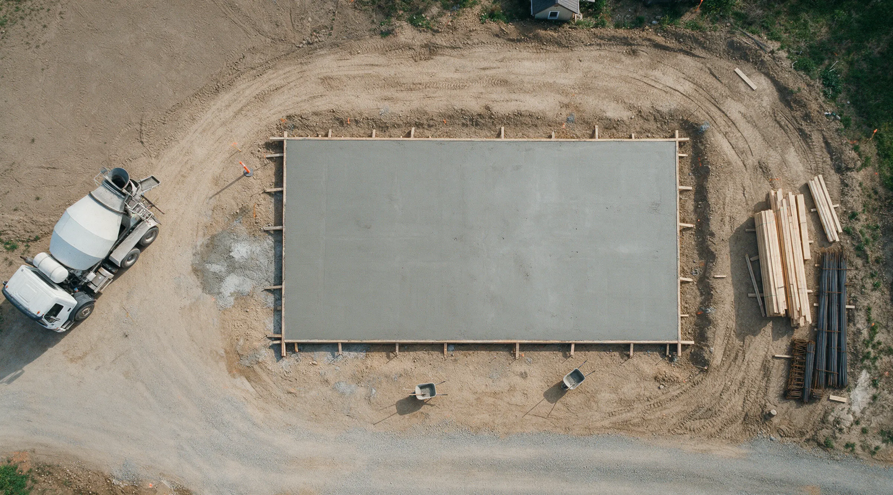
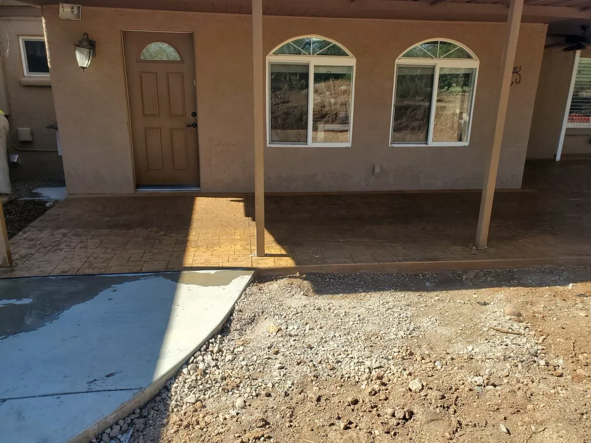
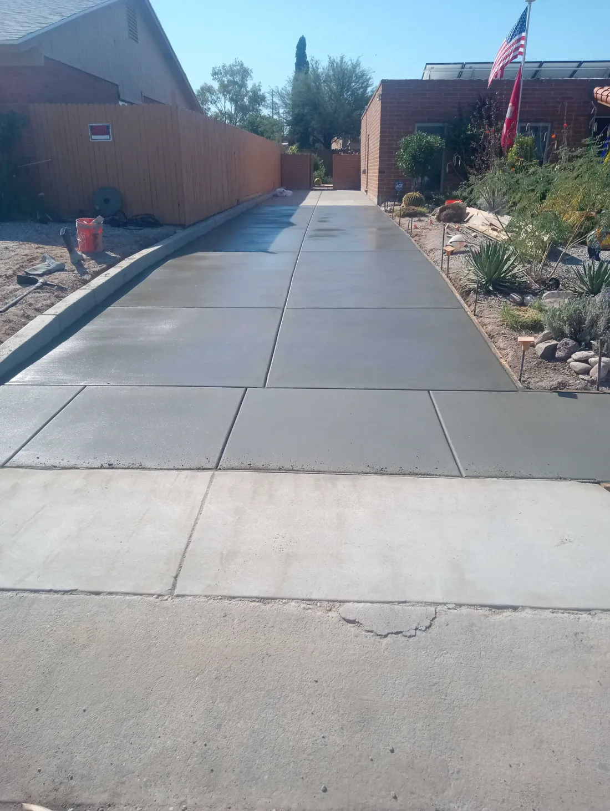
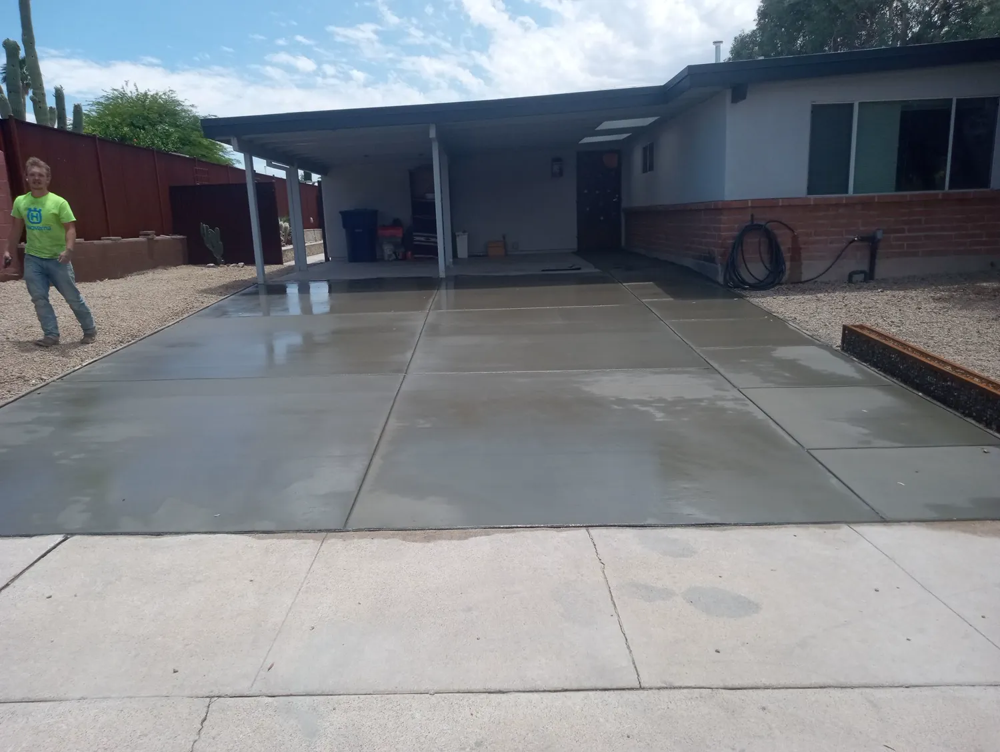
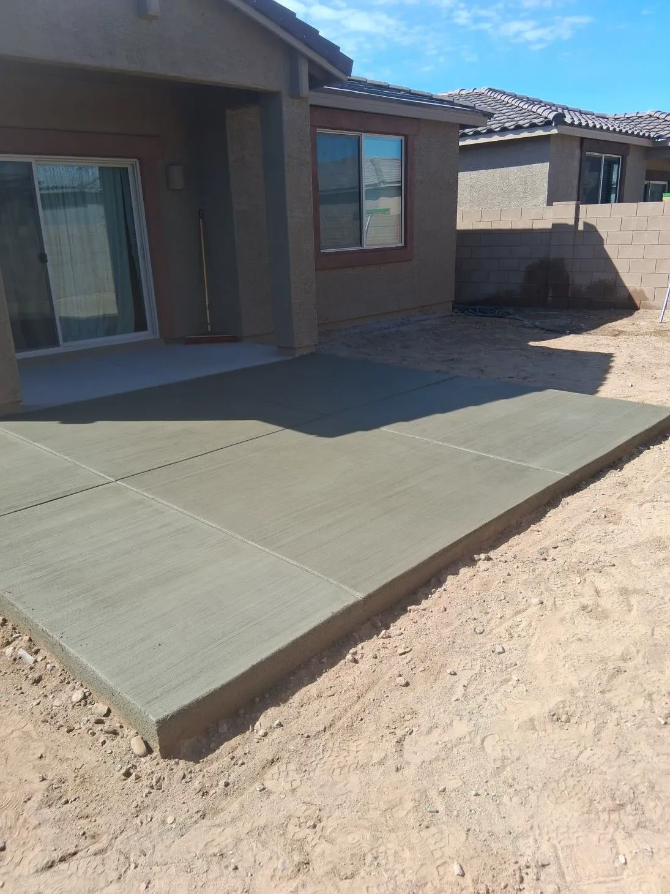
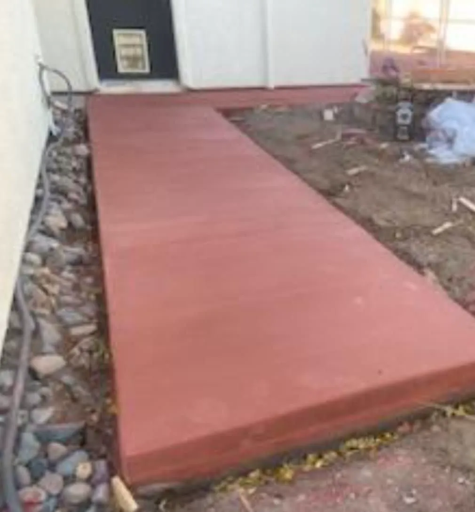
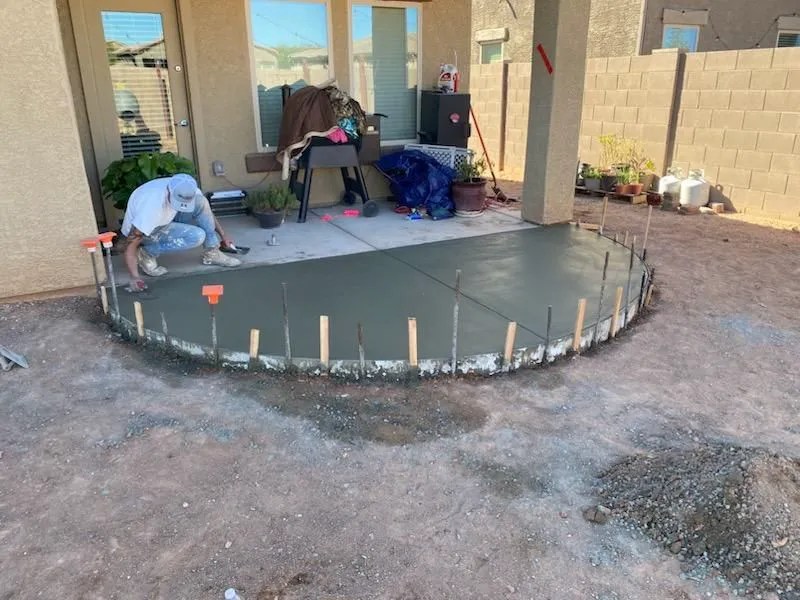
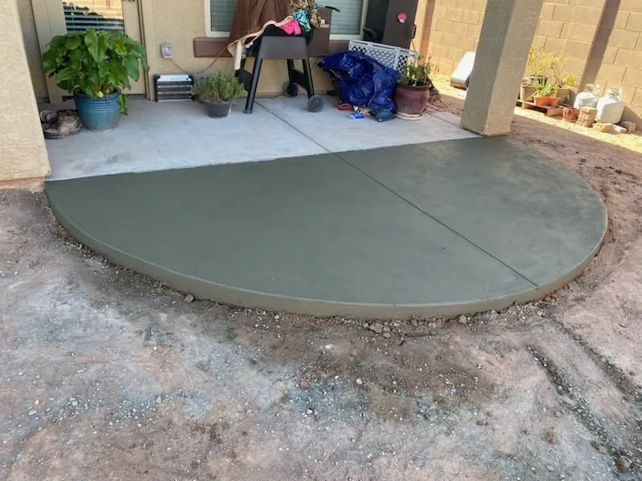

Concrete doesn't do second chances.
Bee's Concrete LLC is a family-owned, bilingual crew building driveways, patios, sidewalks and foundations across Tucson and Pima County. Free estimates.
A truck of concrete gives you about ninety minutes.
Then it starts to set. No undo. No second pour.
Skip the prep, add a little water, rush the finish, and you'll see it in the cracks for years.
This is not a weekend project.


The rushed driveway
Water on the base, a hose in the form.
A wet, loose base settles. The slab on top of it follows.
Soupy mix, poured fast.
Extra water makes concrete easy to place and much weaker once it cures.
Then the cracks show up.
No steel, no planned joints, so the slab picks its own places to break.
And then comes the teardown bill.
Breaking out and re-pouring costs more than doing it right once.

Same driveway. Which crew do you want?


The right way
What done right looks like.
- Compacted gravel base, graded to drain
- Steel where the plan calls for it
- Mix suited to the job, with no extra water added
- Placed, screeded and floated before it sets
- Joints cut and the slab cured, not left to chance
Poured right.
- 5.0 stars from 22 Google reviews
- Free estimates
- Family-owned and bilingual
- 10% veteran and 5% senior discounts
What we build.
Residential and light commercial. Pick one to see what it involves.
Driveway Services
Concrete, stamped concrete, pavers, brick, gravel and crushed stone driveways.
See how we do itFoundation Repair
Look at cracks, settling and movement, and say what the foundation needs.
See how we do itConcrete Floor Installation/Coating
New concrete floors and coatings for garages, shops and businesses.
See how we do itConcrete Flatwork Repair
Cracks, holes and uneven surfaces on driveways, sidewalks and patios.
See how we do itConcrete Sawing/Removal/Finishing
Cutting, breaking out and hauling old concrete, then finishing the new.
See how we do itConcrete Overlay/Coloring
Spray-on, self-leveling, stamped and micro-layer overlays, plus color.
See how we do itConcrete Patios
New, repaired and renovated patios, plain, stamped, colored or stained.
See how we do itConcrete Sidewalks
Plain, stamped, stained, stenciled and exposed aggregate sidewalks and walks.
See how we do itConcrete Flatwork
Driveways, patios, garages, shed floors, courtyards, pool decks and sidewalks.
See how we do itConcrete Slab on Grade
Slab-on-grade foundations and floors for homes, garages and additions.
See how we do itConcrete Repair
Chipping, cracking, discoloration, potholes and pooling water, fixed.
See how we do itFoundation Installation
New foundations: excavation, forms, pour, backfill and cure.
See how we do itConcrete Steps
New concrete steps, and repair or replacement of damaged ones.
See how we do itConcrete Leveling
Assess sunken or settled concrete, then level, resurface or replace it.
See how we do itConcrete Deck
Durable, low-maintenance concrete decks, stamped or stained for the look you want.
See how we do itPoured Concrete Walls
Poured concrete wall installation for landscapes and structures.
See how we do itNot sure which one you need?
Our work.
Photos from our gallery. Ask us for more.






How we keep it honest.
Concrete is hard to judge until it's too late to change. So we put the important parts in front of you early.
-
Free estimates.
Call or send the details and we will look at the job and talk it through. There is no charge for the estimate.
-
Family-owned and local.
A bilingual, family-owned crew based in Tucson, for homes and light commercial properties.
-
Quality work at a fair price.
The goal is good work at an affordable price, with competitive pricing and warranties.
-
Discounts for veterans and seniors.
10% off for veterans and 5% off for senior citizens.

Family-owned. Bilingual. Local.
Bee's Concrete LLC is a family-owned and locally operated concrete contractor serving Tucson and nearby towns. The crew is bilingual and works for homeowners and light commercial clients.
The services run from driveways, patios and sidewalks to floors, foundations, repair, sawing and removal, overlays and coloring. Estimates are free.
- Owned
- Family-owned and locally operated
- Language
- Bilingual crew
- Clients
- Residential and light commercial
- Hours
- Open 24 hours
Where we work.
Serving Tucson and Pima County and the towns around it.
- Tucson
- Vail
- Sahuarita
- Green Valley
- Marana
- Oro Valley
- Benson
- Casa Grande
- Pinetop-Lakeside
- Show Low
Not on the list? Call. If we can get there, we will tell you straight whether we can take the job.
Call (520) 564-5255What customers say.
Hover a bubble to read it.Tap a bubble to read it.
5.0 average from 22 reviews. Read them on Google
Brett and his team did an outstanding job on my driveway. They removed the old driveway and replaced it. Smooth process, great communication, professional, friendly and excellent results. Bee's Concrete beat three other competitors prices. Highly recommend!
Brett and James Adcox who own Bee’s Concrete LLC are young men with old school work ethics. They added an additional driveway area and an extended patio in my backyard. Superior attention to detail from beginning to end of the job. They arrived on time kept us up to date on the daily process.
I had 4 contractor bids but Bees Concrete gave me the most confidence in their bid. ... His whole crew were friendly, professional, and respectful to my family and neighbors while on the job site.
Booking is simple.
-
Call or send the form
Tell us what you want built and where.
-
We look at the job
Free estimate. We measure and talk through options.
-
You get a price
One clear quote for the work.
-
We build it
Prep, forms, pour, finish, cure. Then a walkthrough with you.
Questions we hear a lot.
How long until I can walk or drive on new concrete?
Most slabs take foot traffic after about 24 to 48 hours. Cars usually wait around a week. Concrete keeps gaining strength for roughly 28 days, so ask for dates on your job.
Can concrete be poured in Tucson summer heat?
Yes, with a plan. Hot weather makes concrete set faster, so the pour hours, the mix and the curing are adjusted. Early morning pours are common in Arizona summers.
What services do you offer?
Driveways, patios, sidewalks, steps, decks, flatwork, slabs and foundations, floors and coatings, overlays and coloring, repair, leveling, sawing and removal. Each has its own page above.
Do I need a permit?
It depends on the job and the jurisdiction. Foundations and structural work almost always do, and so does anything in the public right of way. Ask when you call and we will tell you what applies.
Do you offer free estimates?
Yes. Estimates are free. Veterans get 10% off and senior citizens get 5% off.
Should concrete be sealed?
For most driveways and patios, yes. A sealer slows staining and surface wear, and in Arizona it helps colored concrete hold up in the sun.
Ready when you are.
Call us, or send the details and we will call you to set up a free estimate.